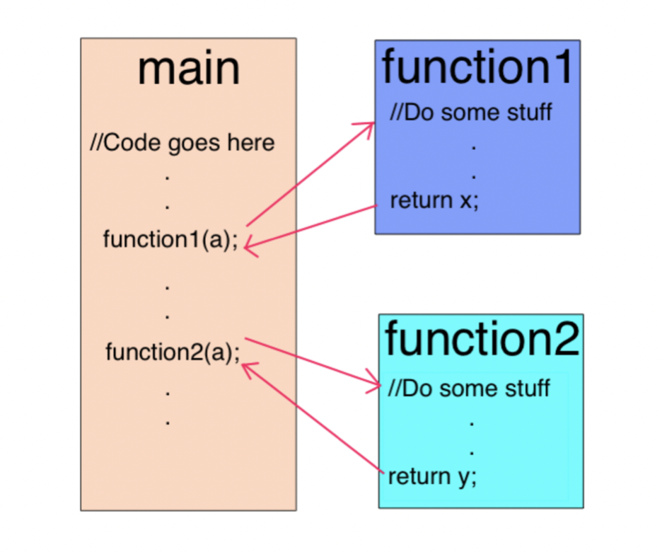
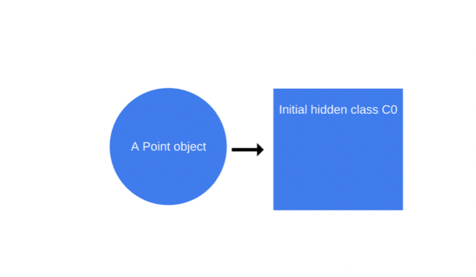
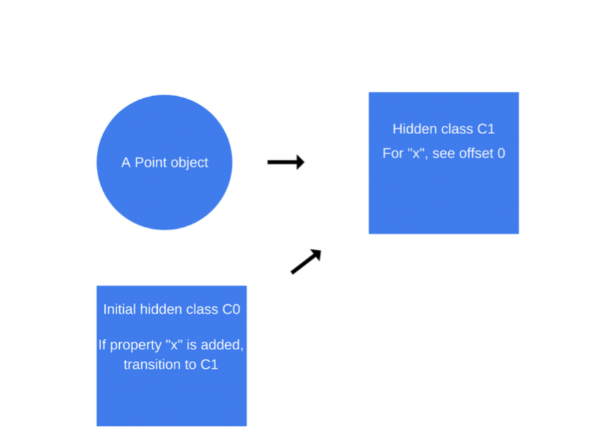
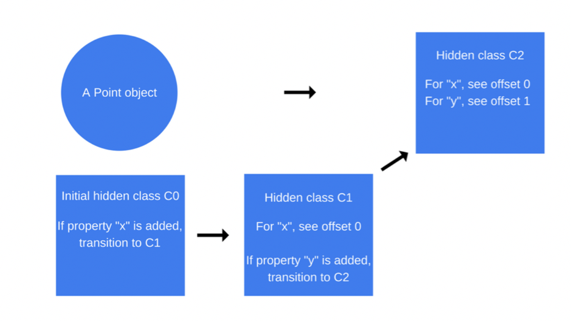
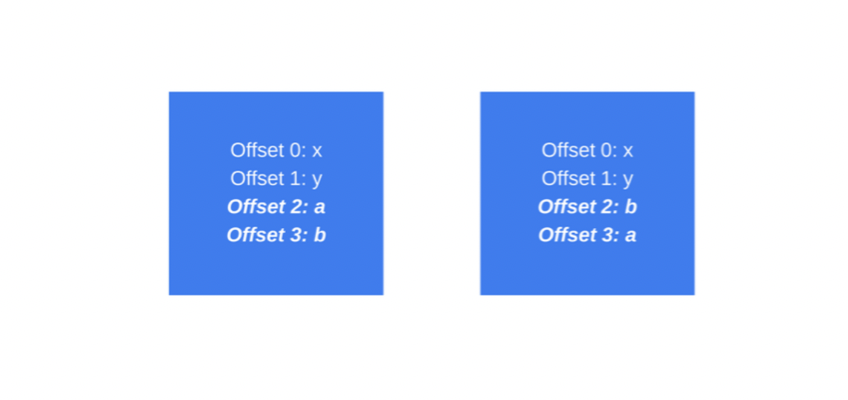

JavaScript engines - how do they even
概览
JS 引擎就是执行JS 代码的，可以是一个标准的解释器，或是一个即时（Just-in-time）JS代码编译器，将JS代码编程某种形式的字节码 一些常见的 浏览器内核 也就是 JS 引擎 * V8 — 谷歌 、C++、 开源 * Rhino — Mozilla Foundation 、Java、开源 * SpiderMonkey — 第一代 JS 引擎，之前 Netscape Navigator 浏览器，现在Firefox 在用 * JavaScriptCore — 苹果出品、开源、safari * KJS — KDE引擎最初由Harri Porten为KDE项目的Konqueror web浏览器开发的 * Chakra(JScript9) — Internet Explorer * Chakra(JavaScript) — Microsoft Edge
V8 为何而生
Chrome浏览器用的就是V8 引擎，和其他JS 引擎不一样的地方是，大名鼎鼎的nodejs 也是跑在V8 上的。
V8 最初的设计是用来优化浏览器中JS的运行速度。为了提速，V8 会跳过中间的翻译步骤，直接把JS代码编译成高效的机器码。他会像其他JS引擎（spiderMonkey，Rhino— Mozilla）一样，在代码执行时用一个即时编译器（JIT compiler）将JS代码 变成 机器码，唯一不同的可能是 V8 在编译过程中不会产生字节码（bytecode） 或其他中间步骤代码
V8 有两个编译器 在 5.9 版本出来之前，V8 引擎用了两个JS 编译器（作者很严谨啊） * 全量代码生成（full-codegen） — 一个简单且快速的编译器，生成简单且相对来说较慢的机器码 * 曲轴（Crankshaft） — 一个更复杂的，优化编辑器，生成高度优化的代码 * 最新版本叫做 TurboFan
V8 内部的数个线程分工 * 主线程用来做一些意料之内的事情：拉取你的代码、编译、执行 * 有一些额外用来编译的小线程，让主线程可以去做一些优化代码的任务 * 侦察兵线程会发现比较耗时的方法，让曲轴去优化 * 还有一小部分线程会处理垃圾回收（GC）相关事宜
JS 代码开始执行
一开始，V8 会用 full-codegen 将 JS 代码 直接转换成机器码，一点优化一点处理都没有奥，为的就是可以最快速的开始解析，注意 V8 是直接转成机器码 一点中间过程都没有的
当你的代码跑了一会儿后，侦察兵线程已经收集到足够的数据去分析哪些方法应该优化了
接下来，Crankshaft 优化工作开始啦，他会新开一个优化线程，将抽象语法数（AST）转变成 高级的静态单赋值 static single-assignment（SSA 一种高效的数据流分析技术）叫做 Hydrogen ，并尝试优化这个 Hydrogen graph。 大多数的优化都在这层做。
Inlining 级联
优化第一步 是提前 尽可能多的 级联 代码。 级联怎么做呢？ 级联 是 在调用在中 将被调用的函数整体替换过来。 这个简单的步骤 为之后的优化 铺平道路啊。 
隐类 Hidden class
JS 是基于原型链的语言，没有 类 （class）的概念，object 都是 克隆出来的 JS 还是一门动态类型语言，也就是说 实例化之后，仍然可以很容易的增删改所有属性
大多数 JS 解释器 用一个类似哈希字典的结构来存储 object 属性在内存中的地址，这种数据结构相比于非动态类型语言（Java or C#）来说，寻址的耗费会昂贵巨多。Java 语言中，所有的对象属性 在编译前 都被固定在对象的某个位置 且在运行时也不能动态的增删（C #有动态类型，那是另外一个话题了）。 这样做的结果就是 属性的值可以存储在一段连续内存的buffer里面，且相互之间有一个 固定的 offset。这在 JS 语言里简直是天方夜谭，JS 里我们可以想什么时候加属性就什么时候加，超厉害的
在javascript 里面定义一个 object 非常简单，而且增删改 可以直接操作，包括原型链上的property ，就像篮子 里面挑鸡蛋。。。。
但是 上面那些简洁操作的代价 就留给了 JS引擎 ， 比如说 ：
1
2
3function findx (obj) {
return obj.x
}
当调用这个函数的时候，编译器 可谓 一无所知，除了你想得到 X !!! 他不知道有没有 x ，传进来的这个object有没有x，或许是在原型链上？x 是怎么存的 ？在哪存的？x 在内存哪里存着？等等一系列丧心病狂的问题。。。
JUST IN TIME ( JIT )compilation Generate machine code during runtime, not ahesd of time(AOT)
由于 用字典存储 属性的内存地址这一做法十分低效，V8 用一个另外的方法代替： hidden classes 。 隐类 同 Java 处理对象属性内存地址的思想很相似（其实就是学的Java），操作如下：
1
2
3
4
5
6function Point(x, y) {
this.x = x;
this.y = y;
}
let p1 = new Point(1, 2);
一旦 new Point（1，2 ）‘被调用，V8 会创建一个叫做 C0 的隐类 
目前为止没有定义任何属性 ，所以 C0 是空的
一旦构造函数 Point内 第一个声明 this.x = x 执行，V8 会基于 C0 创建第二个 叫做 C1 的隐类， C1 记录了属性 x 相对于 object的内存地址（对象指针）。这个case里面 x 的位置是相对于 object ，offset 0 的位置，也就是说在内存中将Point 对象看作一段连续内存时，第一个地址就是 属性x 。V8 也会用 ‘class transition‘ 来更新 C0，如果一个属性 x 被添加到一个点对象时，隐藏类应该从 C0 切换到 C1 ，下面的 point 对象的隐藏类现在是 C1 
每当一个新的属性被添加到一个对象时，旧的隐藏类将被更新为到新的隐藏类的转换路径。隐藏的类转换非常重要，因为它们允许隐藏的类在以相同方式创建的对象之间共享。如果两个对象共享一个隐藏类，并将相同的属性添加到这两个对象，则转换将确保两个对象接收相同的新隐藏类和所有优化代码。
当执行 this.y = y 时，重复上述步骤
当 属性 y 被添加到 point object 时，会创建一个叫 C2 的新的隐类，同时 类的转换会添加到 C1，那么隐藏类 会变成 C2，point 对象的隐藏类更新为C2 
隐类的变换基于按属性添加顺序的，像下面的code
1
2
3
4
5
6
7
8
9
10
11
12function Point(x, y) {
this.x = x;
this.y = y;
}
var p1 = new Point(1, 2);
p1.a = 5;
p1.b = 6;
var p2 = new Point(3, 4);
p2.b = 7;
p2.a = 8;
现在，我们可以假设 p1 和 p2 有着相同的隐类，隐类的变换也是可以共用的。但事实上，不可以的。p1 的第一个属性是a，然后是属性b，p2 的第一个属性是b，然后才是a。因此，p1 和 p2 以不同的 隐类转换方式而告终。这个case里面，如果动态属性可以用相同的顺序初始化，就可以重复使用这个隐类。
内联缓存 Inline caching
V8 利用另外一种叫做级联缓存（Inline caching）的技术来优化动态类型语言。内联缓存依赖于在相同类型的对象上使用相同方法的重复调用（ 内联缓存深入介绍 ）
V8 内部会维护一个对象类型的缓存，会以参数的形式传给当前调用栈，调用栈利用这些信息做一个假设，假设什么呢，他会假设下一个传进来的参数就是缓存的那种对象类型。如果V8的这种假设成立，调用栈呢 就会忽略去找 对象参数的里面各种属性的值的繁杂计算（为什么找一个对象的属性会成为繁杂呢？稍后解释），转而，使用之前缓存的信息去查找 对象的隐类（这样做超快的）。
那么 隐类和内联缓存是如何关联的呢？当某个对象的方法被调用时，比如 a.x，a 是一个对象，V8引擎就会查找这个对象的隐类，来确定拿到某个属性对应值的偏移量 offset。两次正确的，相同方式的隐类查找后，V8 会去掉隐类查找，然后简单又直接的在object的内存地址上 加上这个 offset 。V8 会假设之后所有的调用方法的隐类都不会变，直接跳到用offset 计算后的属性内存地址。这种方法极大的提高了执行速度。
内联缓存也是 相同类型对象 共用隐类的一个很极其重要的原因。如果我们创建了两个相同类型的对象，却有着不同的隐类（就像第一个例子），属性相同，却有着不同的隐类，V8 引擎就不会使用内联缓存。

编译成机器码
一旦 Hyfrogen graph 优化之后，Crankshaft 将其降低到称为 Lithium 的较低级。大部分的 Lithium 实现都是特定于架构的。寄存器分配往往发生在这个级别。
最后，Lithium 被编译成机器码。然后就是OSR（on-stack replacement）堆栈替换。在我们开始编译和优化一个明确的长期运行的方法之前，我们可能会运行堆栈替换。 V8 不只是缓慢执行堆栈替换，并再次开始优化。相反，它会转换我们拥有的所有上下文（堆栈，寄存器），以便在执行过程中切换到优化版本上。这是一个非常复杂的任务，考虑到除了其他优化之外，V8 最初还将代码内联。 V8 不是唯一能够做到的引擎。
有一种叫做去优化的保护措施来做出相反的变换，并且在假设引擎优化无效的情况下，还原回非优化的代码。
如何编写优化的 JavaScript
1. *对象属性的顺序：*始终以相同的顺序实例化对象属性，以便共享的隐藏类和随后优化的代码可以共享之。
2. 动态属性：在实例化之后向对象添加属性将强制执行隐藏的类更改，并降低之前隐藏类所优化的所有方法的执行速度。相反，在其构造函数中分配所有对象的属性。
3. 方法：重复执行相同方法的代码将比仅执行一次的多个不同方法（由于内联缓存）的代码运行得更快。
4. 数组：避免稀疏数组，其中键值不是自增的数字。并没有存储所有元素的稀疏数组是哈希表。这种数组中的元素访问开销较高。另外，尽量避免预分配大数组。最好是按需增长。最后，不要删除数组中的元素。这会使键值变得稀疏。
https://v8.dev/blog/10-years